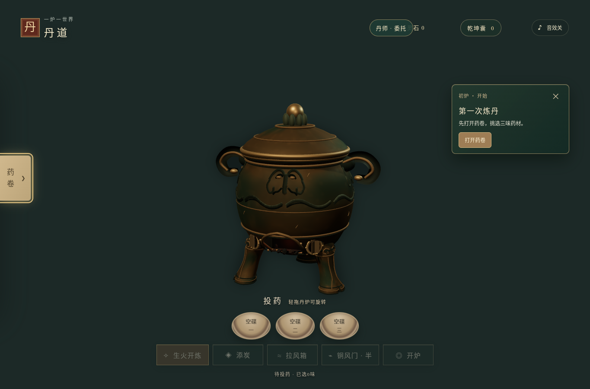
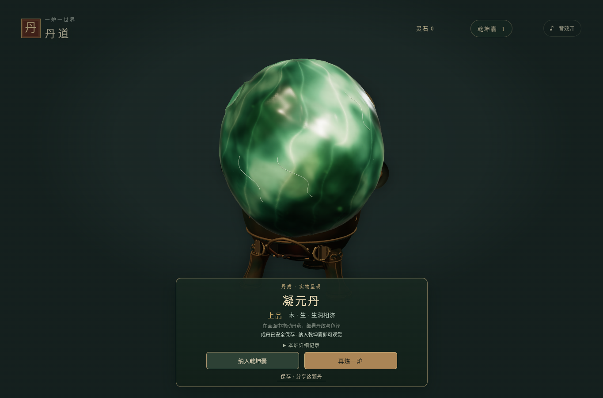
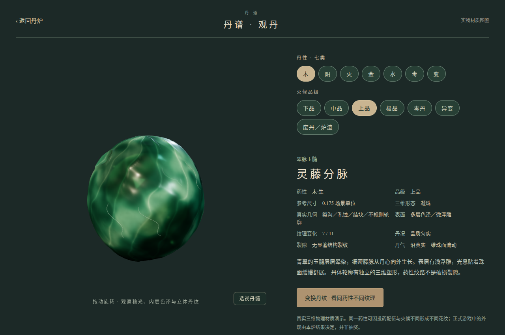
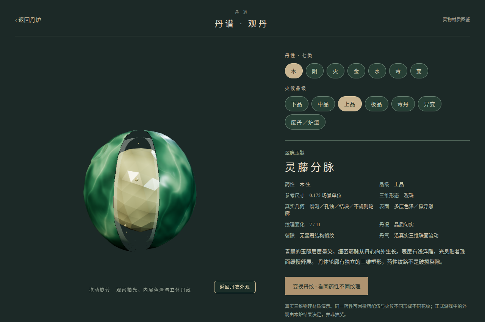
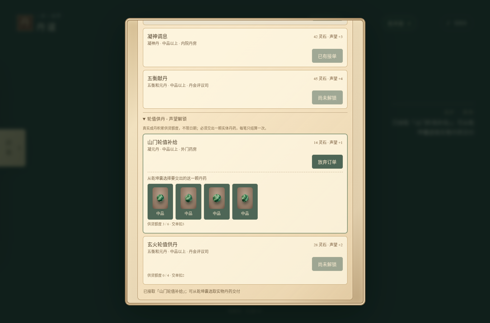
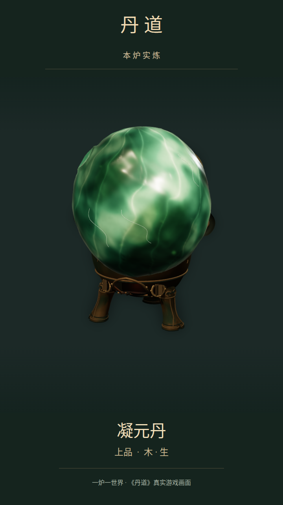

《丹道：初入丹途》V1.0 RC1 · 实机验收
以下是同一份整合候选工程的实际 WebGL2 游戏截图、原生三维丹药和视频证据，不是 AI 画的宣传概念图。所有画面均需玩家主观美术签收。

01 · 首次进入真实 3D 青铜炉、新手引导和药卷。

02 · 真实开炉成丹正常投药、风箱、火候采样后产生并保存上品凝元丹。

03 · 三层丹体独立 WebGL2 观丹模式。非玩家初炉时同一颗的截图，属于真实渲染的材质示例。

04 · 透视丹髓同一试验种子的真实 3D 剖视；可以返回普通观赏模式。

05 · 师门委托使用正式规则准备合法库存后，在真实 Chrome UI 中选独立丹药交单；不得解释成已有人类玩家完成全部前置炼丹。

06 · 真实晒丹从玩家真实三维游戏画面生成的 720×1280 PNG，不是额外合成的宣传丹药。
07 · 10 秒真实开炉视频GPU 原生 Chrome 录制 WebM 的实际 3D 画面转码成 H.264/AAC MP4 方便播放。原始视频约 146 个画面帧/10 秒，不是 30FPS；音频源曾出现 Opus 解析警告，本 MP4 文件已通过解码检查。
此视频不是 AI 生成或动画重绘，也不能代替真手机性能验收。
当前仅免费发布候选试玩。无服务器账号、多人交易或现金支付。丹药与灵石存储于该浏览器本机 IndexedDB，清理网站数据会清除进度。